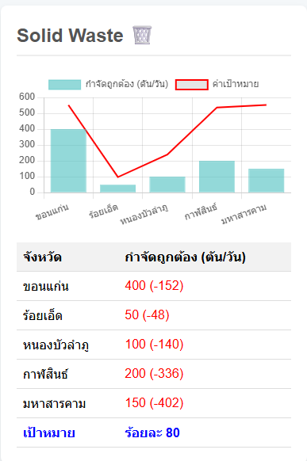

รายงานคุณภาพสิ่งแวดล้อม: การจัดการมูลฝอยชุมชน

ภาพที่ 3: ผลการจัดการมูลฝอยชุมชนของ 5 จังหวัด
บทนำ
รายงานฉบับนี้จัดทำขึ้นเพื่ออภิปรายผลและให้ข้อเสนอแนะสำหรับการจัดการมูลฝอยชุมชนในพื้นที่ 5 จังหวัดได้แก่ ขอนแก่น ร้อยเอ็ด หนองบัวลำภู กาฬสินธ์ และมหาสารคาม โดยใช้ข้อมูลจากผลการจัดการมูลฝอยชุมชนในแต่ละจังหวัด เทียบกับค่าเป้าหมายที่กำหนดไว้ที่ร้อยละ 80 เป็นเกณฑ์ในการประเมิน
การอภิปรายผล
ภาพที่ 3 แสดงผลการจัดการมูลฝอยชุมชนของ 5 จังหวัดในด้านปริมาณ "กำจัดถูกต้อง" (ตัน/วัน) เทียบกับ "ค่าเป้าหมาย" ที่กำหนดไว้ที่ร้อยละ 80
- ทุกจังหวัดมีปริมาณการกำจัดมูลฝอยถูกต้องต่ำกว่าค่าเป้าหมายที่กำหนดไว้ ซึ่งแสดงถึงความท้าทายร่วมกันในด้านการจัดการขยะในภูมิภาคนี้
- ขอนแก่น มีปริมาณกำจัดถูกต้องสูงสุดที่ 400 ตัน/วัน แต่ยังห่างจากเป้าหมายอยู่ 152 ตัน/วัน
- มหาสารคาม และ กาฬสินธ์ มีช่องว่างจากเป้าหมายมากที่สุด โดยมหาสารคามมีช่องว่างถึง 402 ตัน/วัน และกาฬสินธ์มีช่องว่าง 336 ตัน/วัน
- ร้อยเอ็ด และ หนองบัวลำภู มีปริมาณกำจัดถูกต้องน้อยที่สุดอยู่ที่ 50 และ 100 ตัน/วัน ตามลำดับ
ข้อเสนอแนะเพื่อการจัดการมูลฝอยชุมชน
เนื่องจากทุกจังหวัดยังไม่สามารถบรรลุเป้าหมายที่ร้อยละ 80 ได้ จึงควรมีการปรับปรุงและดำเนินการเชิงรุกเพื่อยกระดับประสิทธิภาพการจัดการมูลฝอยดังนี้:
ส่งเสริมการคัดแยกขยะตั้งแต่ต้นทาง
- รณรงค์และให้ความรู้ประชาชนในการคัดแยกขยะที่ครัวเรือน เพื่อเพิ่มปริมาณขยะรีไซเคิลและลดปริมาณขยะที่ต้องกำจัด
เพิ่มประสิทธิภาพระบบการจัดเก็บและกำจัด
- ลงทุนในเทคโนโลยีและโครงสร้างพื้นฐานที่ทันสมัยสำหรับการกำจัดขยะ เช่น โรงงานแปรรูปขยะเป็นพลังงาน (Waste-to-Energy) หรือการผลิตปุ๋ยอินทรีย์
มาตรการสำหรับจังหวัดที่มีปัญหามาก
- ให้ความสำคัญกับจังหวัดที่มีช่องว่างจากเป้าหมายมากที่สุดอย่างมหาสารคามและกาฬสินธ์ โดยอาจจัดสรรงบประมาณและทรัพยากรเพิ่มเติมเพื่อพัฒนาระบบการจัดการขยะให้มีประสิทธิภาพมากขึ้น
สร้างความร่วมมือระดับภูมิภาค
- เนื่องจากเป็นปัญหาที่เกิดขึ้นในทุกจังหวัด จึงควรมีการแลกเปลี่ยนความรู้และประสบการณ์ในการจัดการขยะระหว่างกัน เพื่อนำแนวทางปฏิบัติที่ดีที่สุดมาปรับใช้
บังคับใช้กฎหมายอย่างจริงจัง
- กวดขันการทิ้งขยะในที่สาธารณะและการลักลอบเผาขยะ เพื่อลดมลพิษและปริมาณขยะที่ไม่ได้เข้าสู่ระบบการกำจัดที่ถูกต้อง